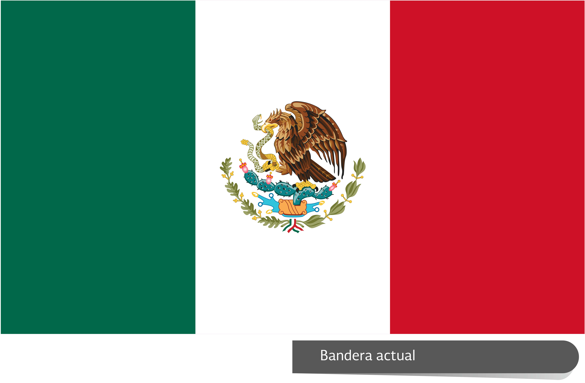

Es un país llano, situado en la depresión conocida como la cuenca Senegal-Mauritania. Su orografía se caracteriza por una llanura costera al Este que se eleva gradualmente hacia el Sudeste, hasta alcanzar una altitud máxima de 581 metros

ETIOPIA
ETIOPIAtiopía, oficialmente la República Democrática Federal de Etiopía, antiguamente conocida como Abisinia o Alta Æthiopía, es un país situado en el Cuerno de África.

OCEANIA
AUSTRALIA
AUSTRALIAAustralia fue uno de los primeros países del mundo donde las mujeres pudieron votar; en concreto, en Australia Meridional en 1861, aunque este sufragio no era universal ya que había restricciones al voto y no todas podían votar.

FIYI
FIYIFiyi fue colonizado por británicos entre 1874 y 1970. Entre 1879 y 1916 le dieron a 600,000 indios tránsito libre por Fiyi a cambio de trabajo en plantaciones de caña de azúcar.

SAMOA
SAMOAEs el primer país en empezar los días y en recibir el año nuevo. Debido a su posición en el océano Pacífico es el primer país del mundo

PALAOS
PALAOSEl explorador español Ruy López de Villalobos descubrió estas islas en 1543, pero los europeos no pusieron mucho más interés en ellas hasta siglos más tarde.

TONGA
TONGAHierba nativa de las islas del sur del Pacífico. Las sustancias tomadas de la raíz se han usado en algunas culturas para aliviar el estrés, la ansiedad, la tensión, el insomnio y los problemas de la menopausia.

AMERICA
MEXICO
MEXICOMéxico es el país de habla hispana con más habitantes (120 millones). Aproximadamente, el 90% de los mexicanos habla español, pero el otro 10% habla otras lenguas.
PERU
PERUl Perú es uno de los países más biodiversos del mundo. Esto se debe a que cuenta con tres regiones: costa, sierra y selva, lo que permite la existencia de una amplia variedad de flora y fauna.

CHILE
CHLEChile es el país con más especies de pingüinos.

HAITI
HAITIaití es el país más pobre de América Latina y el Caribe y registra uno de los mayores índices de desigualdad de ingresos del mundo.

CUBA
CUBACNN) -- Aquí les compartimos información de contexto sobre Cuba, un país comunista ubicado en el mar Caribe, aproximadamente 140 km al sur de Florida.